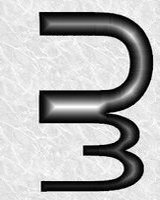
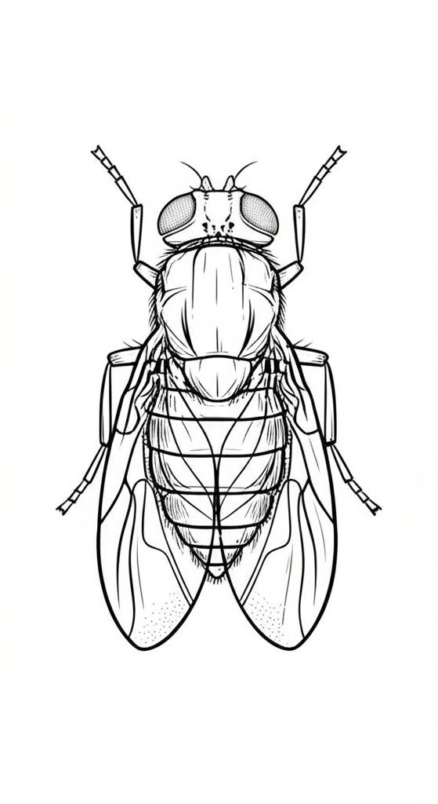

Contents
Chapter 1: Cover Page
Chapter 2: Framework
Chapter 3: Tracking Principles
Chapter 4: Experimental Interface
Chapter 5: Calibration on Image
Chapter 6: Calibration on Data
Chapter 7: Analysis
Chapter 8: Plotting App
Chapter 9: Labeling ROI
Chapter 10: Video Making
Chapter 11: Error and Working

Population Biology Laboratory (PBL)
IISER PUNE
Large-Scale Drosophila Activity Monitoring Using Computer Vision
Developing a Comprehensive Application with a User-Friendly Interface
